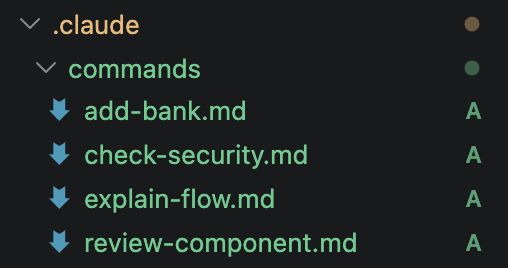
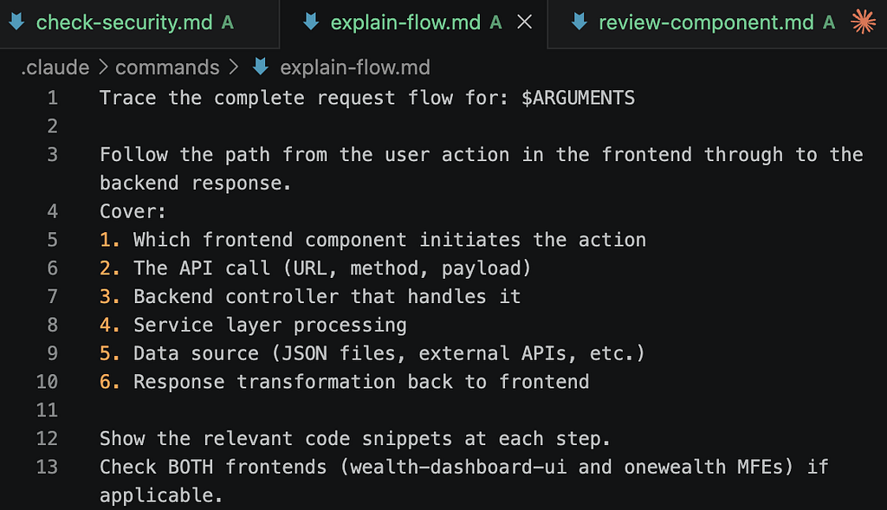

AI Agent Engineering
Developer Tools, MCP, RAG, and Agentic Patterns with Claude Code
By Arunkumar Velusamy · Apr 2026
Slash Commands, Subagents, Hooks,RAG, MCP and etc
Custom Slash Commands
/review-component src/components/Dashboard
/check-security
/explain-flow fetching bank portfolio data
These commands are defined in .claude/commands/ — open them to see how they work.


Plan mode
/plan Add a new "Insurance" asset type across the entire platform
- Review the plan Claude creates
- Modify it ("skip the frontend changes for now")
- Approve or /exitplan
Checkpoints & Rewind
You: Add a todo comment to the top of CLAUDE.md
Claude: [Make the changes]
you: /rewind
[select the checkpoint to undo the change]
Context & Compaction
/context
/compact
Memory
You: Remember that I prefer to see the git diffs before every commit
You : Remember that our spring ends on April 15 2026
You: /memory
[View the saved]
Subagents
You: Explore how the websocket streaming works end to end
You: In the background, analyse all bank JSON files for schema consistency
Worktrees
You: In a worktree, try adding a "Last Refreshed" timestamp to the portfolio response.
This runs in isolation. your working directory stays clean
TodoWrite
You: I need you to add OCBC as a new bank. Track your progress with tasks.
Watch claude creat a task list and check items off as it works
Hooks (observe)
The hooks in .claude/settings.json. When claude modifies a file, you'll see PreToolUse and PostToolUse messages in the output.
Cost & Usage
/cost
[Sees tokens used and estimated cost for this session]
AGENTS.md in Action
You: Explore the authentication flow across both frontends
The spawned agent will follow the instructions in AGENTS.md
SKILL.md
Skill is a structured, reusable workflow the agent can execute. Reusable capabilities / workflows. A Skill knows how to deploy a microservice to kubernetes
Settings Override
Try modifying .claude/settings.local.json to deny a specific tool:
{
"permissions": {
"deny": ["Bash(git push*)"]
}
}
Then ask Claude to push — it will be blocked.
MCP
MCP (Model Context Protocol) is an open standard from Anthropic that lets AI assistants connect to external tools, data, and systems through a universal interface — like "USB-C for AI." It uses a client-server architecture where MCP servers expose tools (functions to call), resources (data), and prompts (templates) over JSON-RPC, so any MCP-compatible client (Claude Code, Cursor, etc.) can use any MCP server without custom integrations.
RAG
RAG (Retrieval-Augmented Generation) fetches relevant information from an external knowledge source at query time and feeds it to an LLM as context, so the model can generate answers grounded in up-to-date or private data instead of relying only on its training. The pipeline is: chunk and embed documents into a vector store, then at query time retrieve the most semantically similar chunks and stuff them into the LLM's prompt. It solves hallucinations, stale knowledge, and lack of access to proprietary data without the cost of retraining.
Plugins
Agent plugins are modular packages that extend AI agents or development environments with reusable skills, hooks, and integrations to automate tasks and enhance functionality
Guardrails
Any mechanism that enforces hard boundaries on what AI can do, regardless of what AI thinks it should do.
Human in the loop
Human in the loop (HITL) is another conceptual pattern, not a single feature. It's about where and how a human gets to approve, redirect, or reject what AI is doing during an agentic task.